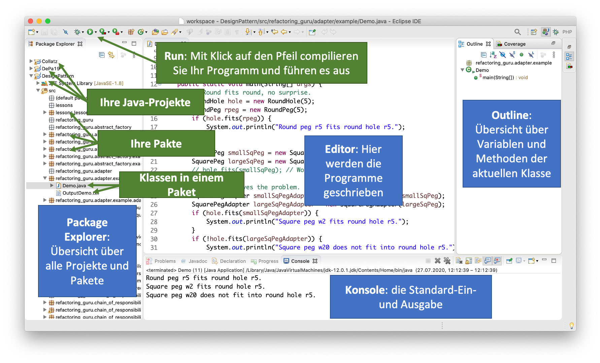
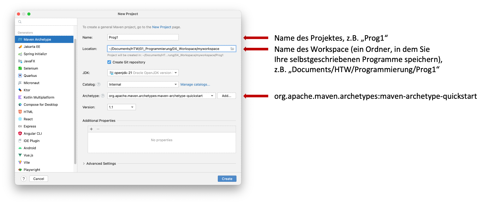
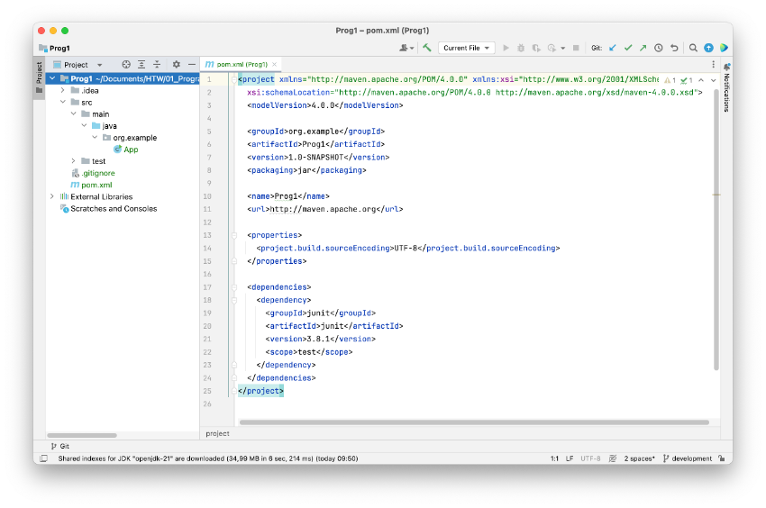

Werkzeuge¶
Literaturempfehlungen¶
- Joachim Goll, Cornelia Heinisch: "Java als erste Programmiersprache. Ein professioneller Einstieg in die Objektorientierung mit Java", Springer Vieweg
- Sebastian Dörn: "Java lernen in abgeschlossenen Lerneinheiten", Springer Vieweg
- Dietmar Ratz, Jens Scheffler, Detlef Seese, Jan Wiesenberger: "Grundkurs Programmieren in Java x", Hanser Verlag
- Kathy Sierra, Bert Bates: "Java von Kopf bis Fuß", O'Reilly Verlag
- Joshua Bloch: "Effective Java. Best practices for the Java platform", Pearson Education Inc.
- Robin C. Martin: "Clean Code: A Handbook of Agile Software Craftmanship", Prentice Hall
- und alle Bücher für Einsteigerinnen, die Sie ansprechen...
Java¶
Wir verwenden die Programmiersprache Java, um die Programmierkonzepte, die wir lernen und anwenden wollen, zu implementieren.
Java besteht aus 2 Teilen:
- der Java Run Time Environment (Java RTE) (Java-Laufzeitumgebung)
- dem Java Development Kit (JDK) (die Java-Entwicklungsumgebung)
Die Java-Laufzeitumgebung ist üblicherweise bereits auf allen Rechnern installiert. Sie ist selbst ein Programm. Innerhalb dieses Programms werden Java-Programme ausgeführt.
Das JDK müssen Sie installieren. Verwenden Sie dazu diesen Link und gehen wie für Ihr Betriebssystem angegeben vor (prüfen Sie aber zunächst, ob Sie nicht eventuell bereits Beides haben - java -version und javac -version - siehe folgend).
Testen Sie am besten auf Ihrer Konsole (Terminal), ob Ihr Java korrekt funktioniert. Zum Testen Ihrer Laufzeitumgebung geben Sie dazu
ein. Es sollte soetwas erscheinen, wie (Versionsnummern bei Ihnen sicherlich schon höher):
openjdk version "22.0.2" 2024-07-16
OpenJDK Runtime Environment (build 22.0.2+9-70)
OpenJDK 64-Bit Server VM (build 22.0.2+9-70, mixed mode, sharing)
Somit wissen Sie, dass die Laufzeitumgebung funktioniert. Zum Testen des JDK rufen wir am besten den Compiler (javac) auf:
Es sollte soetwas erscheinen, wie (Versionsnummern bei Ihnen sicherlich schon höher):
Success
Sie haben nun die Java-Laufzeitumgebung installiert, in der unsere Java-Programme ausgeführt werden und Sie haben das Java Development Kit installiert. Teil des JDK ist z.B. der Compiler, der unsere Java-Programme in Byte-Code übersetzt. Dieser Bytecode wird in unserer Java-Laufzeitumgebung ausgeführt.
IDE¶
Um unsere Programme "zu schreiben", verwenden wir eine sogenannte Integrated Development Environment (IDE), eine integrierte Entwicklungsumgebung, die uns beim Programmieren unterstützt. Wir könnten unsere Programme auch mit einfachen Texteditoren schreiben, aber eine IDE unterstützt uns, indem der Programmcode geeignet hervorgehoben wird (Syntx-Highlighting) und uns Vorschläge für die Verwendung von Methoden und Variablen gemacht werden (Intelligent Code Completion).
Eclipse¶
Sie sind in der Wahl Ihrer IDE frei. Eine sehr gute IDE ist Eclipse. Eclipse ist in Java geschrieben und Open-Source. Das ist auch der Grund, warum wir Eclipse verwenden und nicht IntelliJ. Den Download-Link für Eclipse finden Sie hier. Es gibt verschiedene Versionen von Eclipse, wir verwenden die Eclipse IDE for Java Developers. Installieren Sie Eclipse am besten in ihrem Applications- oder Programme-Ordner.
- Starten Sie Eclipse durch Doppelklick auf das Programmsymbol.
- Erstellen Sie einen Workspace (Arbeitsbereich) in einem gewünschten Ordner (z. B. Programmieren) im Dateisystem. Achten Sie darauf, dass Sie Schreibrechte in diesem Ordner besitzen.
- Anlegen eines Projektordners:
- Auswahl im Menü
File-->New-->Java Project. - Eingabe des
Project name:Name des Projektes (z.B. WiSe20 oder Uebung1 oder Aufgabe2). Wenn Sie gefragt werden, ob Sie einmodule-info.javaerstellen wollen, wählen SieDon't create. - Klicken auf den Button
Finish.
- Auswahl im Menü
- Erstellen eines neuen Packages (Paketes):
- Öffnen der Projektmappe im
Package Explorer. - Auswahl des Ordners
srcmit der rechten Maustaste. - Auswahl des Menüpunktes
New --> Package. - Geben Sie einen Paketnamen ein (Paketnamen werden kleingeschrieben), z.B.
themen.start.
- Öffnen der Projektmappe im
- Erstellen einer neuen Klasse:
- Öffnen der Projektmappe im Package Explorer.
- Auswahl des Paketes (z.B.
themen.start) mit der rechten Maustaste. - Auswahl des Menüpunktes
New --> Class. - Eingabe eines beliebigen Namens, der gleichzeitig der Klassen- und Dateiname ist (z.B.
HelloFIW). Klassennamen werden immer groß geschrieben. - Setzen des Häkchens bei
public static void main(). - Klicken auf den Button
Finish.
Die folgende Abbildung gibt einen Überblick über die Bedeutung der einzelnen Fenster in Eclipse:

IntelliJ¶
Eine sehr häufig und im Bereich der Java-Entwicklung die derzeit wohl am meisten verwendete IDE ist IntelliJ IDEA. IntelliJ ist von JetBrains, einem tschechischen Unternehmen, und derzeit die wohl modernste IDE auf dem Markt, nicht nur für Java- sondern auch für Web-Entwicklungen. IntelliJ ist nicht Open-Source und ist kostenpflichtig. Mit einer Hochschullizenz erhalten Sie jedoch kostenlosen Zugriff auf alle Ultimate-Versionen. Sie müssen sich dazu bei JetBrains mit Ihrer HTW-Adresse registrieren. Die Download-Seite von IntelliJ IDEA finden Sie hier.
Nach dem Start von IntelliJ IDEA klicken Sie auf New project. Es erscheint:

Wählen Sie in der linken Spalte Maven Archetype" aus. Geben Sie Ihrem Projekt einenNamen (muss mit einem Buchstaben beginnen und darf keine Leerzeichen enthalten, vermeiden Sie auch Umlaute und Sonderzeichen). Wählen alsLocationeinen Ordner aus, in dem Sie Ihre selbstgeschriebenen Programme speichern wollen. Ein solcher Ordner könnte bei Ihnen z.B.Documents/HTW/Programmierung/Prog1sein. Wählen Sie unterArchetypedie Optionorg.apache.maven.archetypes:maven-archetype-quickstartaus. Klicken Sie dann aufCreate`.
Es erscheint folgendes Fenster (Informationen, um das Theme in IntelliJ zu ändern, finden Sie z.B. hier):

Öffnen Sie im Project explorer (linke Spalte) sukzessive die Ordner src/main/java/org.example. Doppelklicken Sie auf App. Im Editorfenster öffnet sich unsere erste Java-Klasse App.java. Klicken Sie in der Werkzeugleiste auf den grünen Pfeil neben dem Textfeld, in dem Current file steht. Im unteren Terminalfenster erscheint Hello World!.
Visual Studio Code¶
Wer gerne mit Microsoft-Produkten arbeitet, kann auch gerne Visual Studio Code (VS Code) arbeiten. Das ist auch eine sehr gute IDE und ebenfalls nicht nur zur Nutzung für die Java-Entwicklung, sondern auch für Web- und App-Entwicklungen geeignet. Spätestens im dritten Semster in WebTech werden die meisten von Ihnen entweder auf IntelliJ oder VS Code wechseln. Im Bereich der Web-Entwicklung ist VS Code sicherlich die am meisten verwendete IDE.
Weitere nützliche Werkzeuge¶
Windows: gitBash¶
Das Terminal (cmd) in Windows ist nicht so gut. Installieren Sie sich lieber die GitBash für Windows. Unter Downloads öffnet sich das GitHub-Repository für Git. Aktuell wählen Sie dort Git-2.46.0-64-bit.exe und folgen dann den Installationsanweisungen.
Online-Kurse¶
- JetBrains Academy https://lp.jetbrains.com/de-de/academy/learn-java/